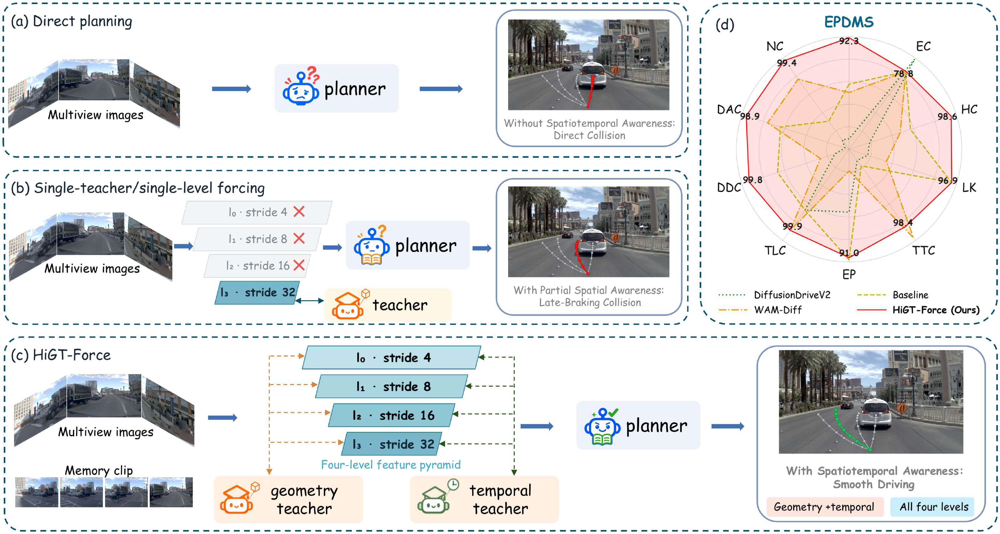
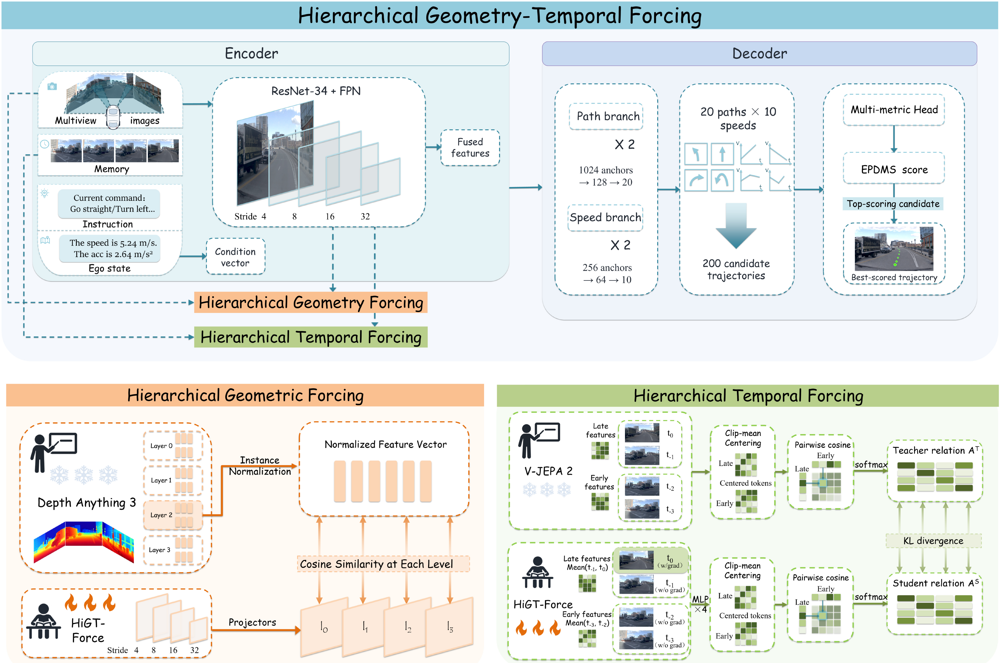
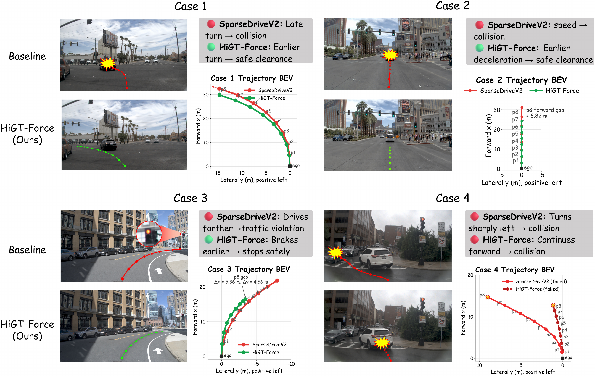

Learn spatial structure
A frozen DA3 teacher supervises spatially corresponding student features through geometric feature alignment.
END-TO-END AUTONOMOUS DRIVING
Empowering End-to-End Driving with Hierarchical Geometry-Temporal Forcing
Transfer geometric structure and cross-frame relations into a driving planner—with teachers used only during training.
THE IDEA
Candidate trajectories need features that capture both road structure and surrounding traffic. HiGT-Force brings complementary geometry and temporal supervision to four levels of the planner’s visual feature pyramid.

Planning supervision paradigms and performance comparison from the manuscript. Select the figure for a larger preview, with the original PDF available in the viewer.
INSIDE HiGT-FORCE
A frozen DA3 teacher supervises spatially corresponding student features through geometric feature alignment.
A frozen V-JEPA 2 teacher supplies association distributions across frames. The student matches these relations using KL divergence.
Both objectives act at FPN strides 4, 8, 16 and 32, alongside the original planning loss.

Historical camera frames provide training-time temporal supervision; inference retains current-frame multi-camera images and the baseline ego-state inputs, including historical ego trajectories.
EXPERIMENTS
Results reported in the manuscript. NAVSIM evaluates planned trajectories; Bench2Drive evaluates closed-loop driving on 220 CARLA routes.
¹ Selection gap is the pool-oracle EPDMS minus the selected trajectory’s EPDMS, evaluated using a shared candidate pool. The 21.3% reduction refers to this gap, not an overall EPDMS increase.
QUALITATIVE RESULTS
Front-camera views and bird’s-eye-view trajectories compare Baseline with HiGT-Force. These are selected examples, including a shared failure case.

Full comparison from the paper. In Cases 1–3, red denotes Baseline and green denotes HiGT-Force. In Case 4, both planners fail; both trajectories are shown in red and identified by their respective line styles in the legend. Select the figure to preview it or open the original PDF.
The examples show earlier turning, earlier deceleration, stopping at a red light, and a shared failure case, respectively.
RESOURCES
Paper, supplementary material and code links will be added when released.